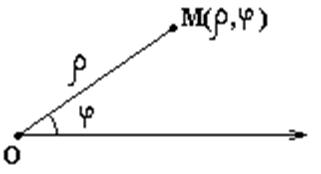

8.1 Основные понятия
Полярные координаты определяются заданием на плоскости
полюса  и полярной оси.
и полярной оси.
и полярной оси.Координаты точки  в
полярных координатах задаются длиной радиус-вектора этой
точки и углом его поворота относительно полярной оси.
в
полярных координатах задаются длиной радиус-вектора этой
точки и углом его поворота относительно полярной оси.
в
полярных координатах задаются длиной радиус-вектора этой
точки и углом его поворота относительно полярной оси.При этом .
